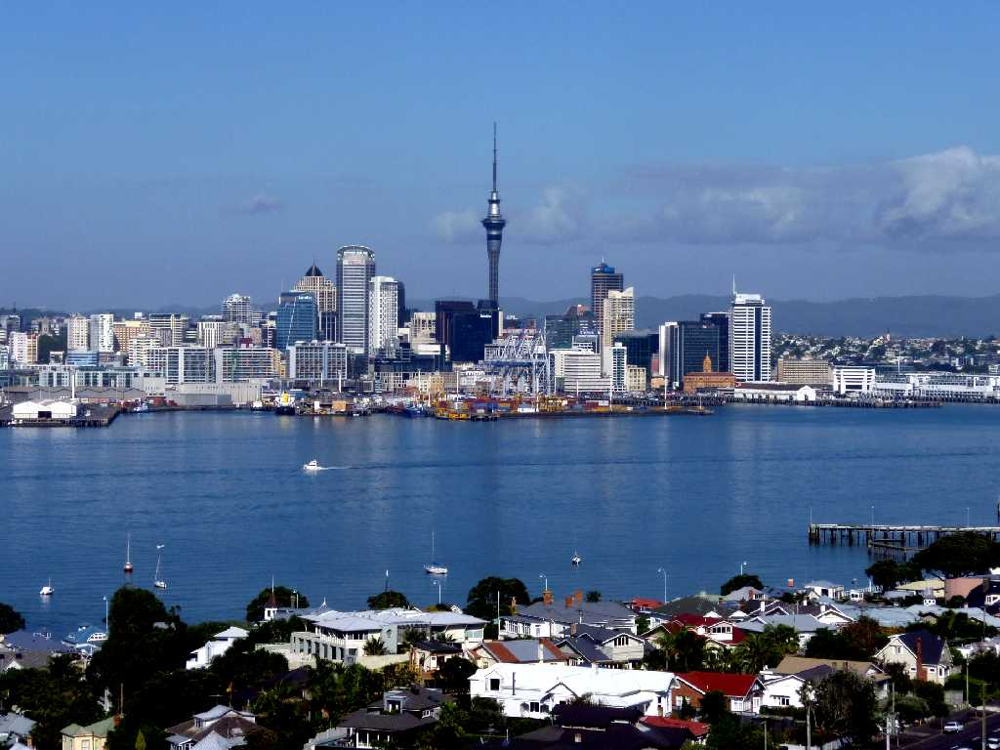
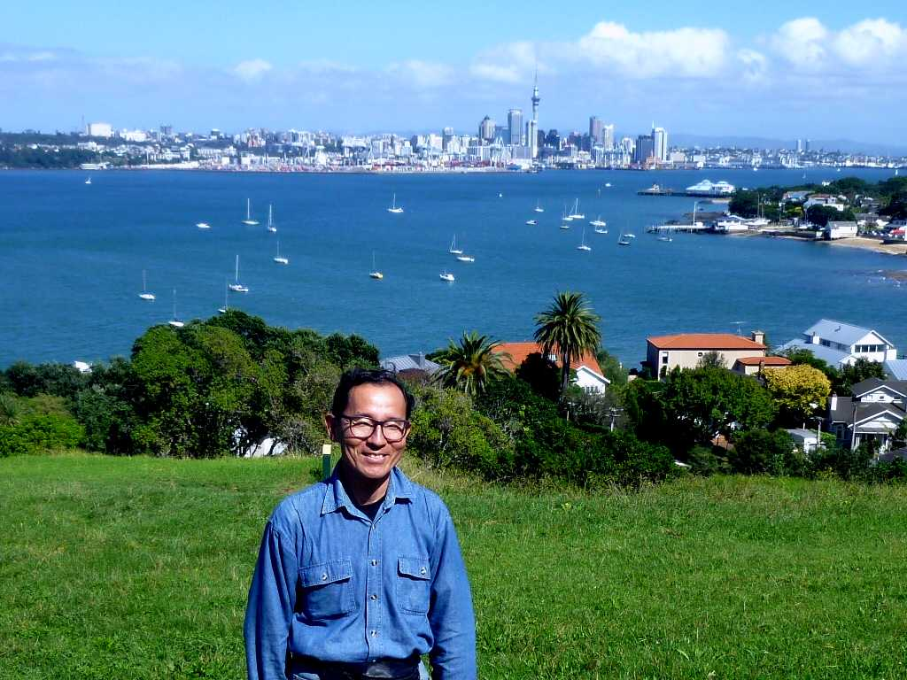

Sky Tower Auckland
オークランドのランドマーク ３２８ｍのスカイタワーは南半球で最も高い塔

Auckland from Mt.Victoria
１０世紀頃からマオリ族が住み始め１９世紀半ばにイギリス植民地となり大型船が碇泊できる港があるオークランドを首都として栄えたがその後国土の中央に位置する港町ウェリントンに遷都した

March 29 2011 North Head Devonport